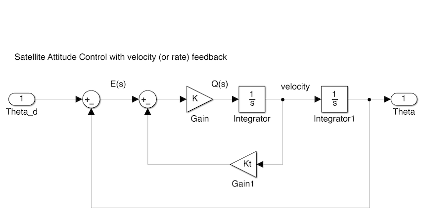

Figure 1 Satellite control with gain modulated torque
Lecturer
Set up MATLAB
cd matlab
pwd
clear all
format compact
In this section we will engage in a short exploration of compensator design in the time domain with a look at root-locus design of a velocity-feedback compensator for a simple "double integrator" system. This serves as an introduction to the topic of phase lead compensation which is used to improve transient performance and relative stability.
First design example (Satellite Attitude Control). The system may be represented in block diagram form as shown in Figure 1. (Simulink model: satellite.slx)
Figure 1 Satellite control with gain modulated torque
For this system the plant transfer function is
$$G(s) = \frac{1}{s^2}$$Feedback:
$$H(s) = 1$$Controller:
$$D(s) = K$$The root locus equation is:
$$1 + KG(s)H(s) = 0$$with root locus parameter = $K$.
Defining the problem in Matlab
G = tf(1,conv([1,0],[1,0]));
H = tf(1,1);
Go = G*H
Note: The root locus gain $K$ is implied in Matlab (it does not need to be defined)
rlocus(Go),title('Root locus diagram for gain modulated satellite attitude control')

Pick off an arbitrary gain
[K]=rlocfind(Go,3/4j)
Closed-loop transfer function
Gc = feedback(K*G,H)
step(Gc,45),title('Step response for closed-loop system with K=sqrt(3)/2')

The block diagram becomes that shown in Figure 2 (Simulink model: velfb.slx).
velfb
The root locus equation is
$$1 + \frac{KK_T(s + 1/K_T)}{s^2} = 0$$where $KK_T$ is the root locus gain.

Figure 2 System with velocity feedback
Kt = 0.5;
Go2=tf(Kt*[1, 1/Kt],[1,0,0]);
rlocus(Go2),title('Root locus of system with velocity feedback')

[K] = rlocfind(Go2,-2+2j)
Integrator=tf(1,[1,0]);
G1=feedback(K*Integrator,Kt)*Integrator;
Gc2=feedback(G1,1)
step(Gc2),title('Step response for velocity feedback (rate) compensated system')

Since $KK_t = 4$
Kt = 4/K
Running the simulink model with these values should give you the same result.
An executable version of this document is available to download as a MATLAB Live Script file velfb.mlx.
The Simulink model of the satellite attitude control system is satellite.slx.
The system with velocity feedback control is available as velfb.slx.